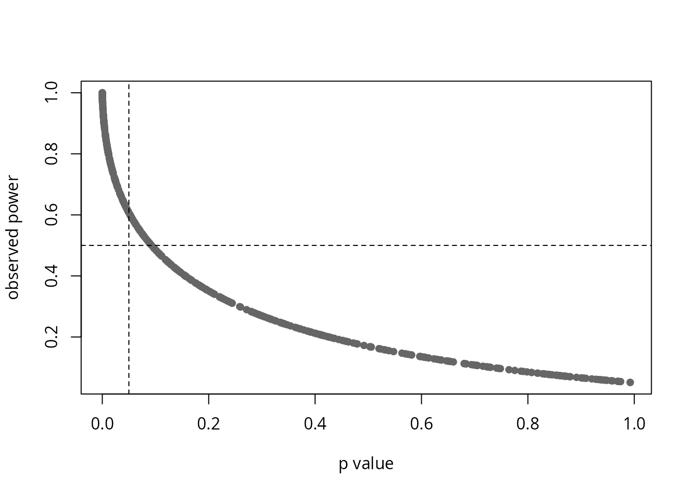

Description
This shows the output of compute_one_way_test from the
package rwf, which runs the one-way analysis of variance for two or more
independent groups, either assuming equal variances (Fisher’s F test) or
not (Welch’s F test, Welch, 1951). The function returns the sums of
squares and mean squares, the F statistic with its degrees of freedom
and p value, five effect sizes (eta-squared, partial eta-squared,
omega-squared, partial omega-squared and Cohen’s f) and the observed
power. Each section gives the formulas the function uses, computes them
by hand and checks the results against stats,
car, lsr, effectsize,
sjstats and pwr.
The group statistics and the Welch test (the weights, the Welch F
statistic and its degrees of freedom) are adapted from
stats::oneway.test (R Core Team, 2026). The sums of
squares, effect sizes and power are added in rwf.
Installation instructions for rwf can be found here
The code can be found here
Notation
There are k independent groups. Group j has n_j observations y_{1j},\dots,y_{n_jj}, mean \bar{y}_j and sample variance s_j^2=\frac{1}{n_j-1}\sum_{i=1}^{n_j}(y_{ij}-\bar{y}_j)^2. N=\sum_{j=1}^{k}n_j is the total sample size and \bar{y} the mean of all N observations.
The one-way ANOVA
The one-way ANOVA tests whether the means of k independent groups are equal. It splits the total variability of the outcome into a part between the group means and a part within the groups, and compares the two. Its null hypothesis is \mu_1=\mu_2=\dots=\mu_k.
Assuming equal variances (Fisher)
Sums of squares and degrees of freedom:
SS_{\text{effect}}=\sum_{j=1}^{k}n_j\left(\bar{y}_j-\bar{y}\right)^2,\qquad df_{\text{effect}}=k-1
SS_{\text{error}}=\sum_{j=1}^{k}(n_j-1)\,s_j^2,\qquad df_{\text{error}}=N-k
SS_{\text{total}}=SS_{\text{effect}}+SS_{\text{error}}=\sum_{j=1}^{k}\sum_{i=1}^{n_j}\left(y_{ij}-\bar{y}\right)^2
Mean squares, the F statistic and its p value:
MS_{\text{effect}}=\frac{SS_{\text{effect}}}{df_{\text{effect}}},\qquad MS_{\text{error}}=\frac{SS_{\text{error}}}{df_{\text{error}}},\qquad F=\frac{MS_{\text{effect}}}{MS_{\text{error}}}
p=P\left(F_{df_{\text{effect}},\,df_{\text{error}}}\ge F\right)
MS_{\text{error}} pools the variances of all groups into one estimate, which is why this version assumes that the groups have equal variances.
Not assuming equal variances (Welch)
Welch’s test weights each group by the precision of its mean, w_j=n_j/s_j^2, so groups with a large variance or few observations count less:
W=\sum_{j=1}^{k}w_j,\qquad \bar{y}_w=\frac{1}{W}\sum_{j=1}^{k}w_j\bar{y}_j,\qquad \Lambda=\frac{1}{k^2-1}\sum_{j=1}^{k}\frac{\left(1-w_j/W\right)^2}{n_j-1}
F_W=\frac{\sum_{j=1}^{k}w_j\left(\bar{y}_j-\bar{y}_w\right)^2}{(k-1)\left(1+2(k-2)\Lambda\right)},\qquad df_{\text{effect}}=k-1,\qquad df_{\text{error}}=\frac{1}{3\Lambda}
The error degrees of freedom are usually not a whole number.
Welch’s test has no sums of squares of its own. To fill the same output columns, rwf sets
MS_{\text{effect}}=\sum_{j=1}^{k}w_j\left(\bar{y}_j-\bar{y}_w\right)^2,\qquad MS_{\text{error}}=(k-1)\left(1+2(k-2)\Lambda\right)
and SS=MS\times df, so that F_W=MS_{\text{effect}}/MS_{\text{error}}. These are not variance components of the data, only quantities that reproduce F_W. The effect sizes computed from them are the usual conversions of an F statistic into an effect size (Welch effect sizes).
When to use it and assumptions
When to use it
Use the one-way ANOVA to compare the means of two or more independent groups on an outcome measured on an interval or ratio scale, such as blood pressure, reaction time or a test score.
Prefer Welch’s version (var.equal = FALSE) unless you
have a good reason to believe the variances are equal. It controls the
Type I error rate when variances differ and loses very little power when
they do not (Delacre, Leys, Mora & Lakens, 2019). The simulation below
shows why.
Do not use it when:
-
The outcome is ordinal, or clearly not normal with small
groups. Use the Kruskal-Wallis test,
compute_kruskal_wallis_test. -
The same participants are measured more than once.
Use a repeated measures ANOVA, or the Friedman test,
compute_friedman_test. - There are covariates or several factors. Use an ANCOVA or a factorial ANOVA.
With two groups the one-way ANOVA is the independent samples t test, and F=t^2. Fisher’s F matches Student’s t and Welch’s F matches Welch’s t, including the degrees of freedom:
fisher <- compute_one_way_test(formula = bp_before ~ sex, df = df_blood_pressure, var.equal = TRUE)
welch <- compute_one_way_test(formula = bp_before ~ sex, df = df_blood_pressure, var.equal = FALSE)
student_t <- stats::t.test(bp_before ~ sex, data = df_blood_pressure, var.equal = TRUE)
welch_t <- stats::t.test(bp_before ~ sex, data = df_blood_pressure, var.equal = FALSE)
data.frame(test = c("Fisher", "Welch"),
F_rwf = c(fisher$statistic, welch$statistic),
t_squared = c(student_t$statistic^2, welch_t$statistic^2),
df_error_rwf = c(fisher$df_error, welch$df_error),
df_t = c(student_t$parameter, welch_t$parameter))## test F_rwf t_squared df_error_rwf df_t
## 1 Fisher 7.755248 7.755248 118.0000 118.0000
## 2 Welch 7.755248 7.755248 117.5604 117.5604Assumptions
- Independent observations. Each observation belongs to one group only and does not depend on any other observation.
- An interval or ratio outcome. Means and variances must be meaningful.
- Normally distributed residuals within each group. With moderate or large groups the F test is fairly robust to non-normality, because the group means are close to normal. With small groups and skewed data use the Kruskal-Wallis test.
- Equal variances across groups (Fisher only). Fisher’s F is fairly robust when the groups are of equal size. When they are not, the Type I error rate is inflated if the smaller groups have the larger variances, and the test becomes conservative if they have the smaller variances. Welch’s F does not make this assumption.
- No extreme outliers. A single extreme value can move a group mean and inflate its variance.
In df_blood_pressure there are 40 independent patients
per age group. The group standard deviations, the Q-Q plot of the
residuals and Levene’s test (with the median, the Brown-Forsythe
version) check normality and equal variances:
data.frame(n = tapply(df_blood_pressure$bp_before, df_blood_pressure$agegrp, length),
mean = tapply(df_blood_pressure$bp_before, df_blood_pressure$agegrp, mean),
sd = tapply(df_blood_pressure$bp_before, df_blood_pressure$agegrp, sd))## n mean sd
## 30-45 40 151.675 9.258087
## 46-59 40 155.100 11.459628
## 60+ 40 162.575 10.727122
model <- stats::aov(bp_before ~ agegrp, data = df_blood_pressure)
par(mfrow = c(1, 2))
boxplot(bp_before ~ agegrp, data = df_blood_pressure, xlab = "age group", ylab = "blood pressure before")
stats::qqnorm(stats::residuals(model))
stats::qqline(stats::residuals(model))
stats::shapiro.test(stats::residuals(model))##
## Shapiro-Wilk normality test
##
## data: stats::residuals(model)
## W = 0.96967, p-value = 0.008207
car::leveneTest(bp_before ~ factor(agegrp), data = df_blood_pressure, center = median)## Levene's Test for Homogeneity of Variance (center = median)
## Df F value Pr(>F)
## group 2 0.9811 0.378
## 117The standard deviations are similar and Levene’s test finds no evidence of unequal variances. The Shapiro-Wilk test detects a departure from normality, but the Q-Q plot shows it is mild, and with 40 observations per group the F test is robust to it. Significance tests of assumptions become more sensitive as the sample grows, so judge the size of the departure from the plots, not only the p value.
Why effect sizes
A p value answers one question: if the group means were equal, how surprising would data like these be? It does not say how large the difference is. Because F grows with the sample size, a trivial difference becomes “significant” in a large sample, and a large difference can be “non-significant” in a small one.
An effect size answers a different question: how much do the groups differ? Effect sizes are useful because they:
- measure magnitude. They separate practical importance from statistical significance.
- do not grow with N. The same population difference gives roughly the same effect size in a study of 30 people or 3,000.
- can be compared across studies. This is what meta-analysis combines.
- drive power analysis. The sample size a new study needs depends on the effect size it expects.
- are expected in reports. The APA Task Force on Statistical Inference recommends reporting effect sizes for primary outcomes (Wilkinson & Task Force on Statistical Inference, 1999; see also Lakens, 2013).
The simulation below shows this with data.
Effect sizes
Eta-squared
\eta^2=\frac{SS_{\text{effect}}}{SS_{\text{total}}},\qquad \eta^2_p=\frac{SS_{\text{effect}}}{SS_{\text{effect}}+SS_{\text{error}}}
\eta^2 is the proportion of the total variance explained by the groups, the R^2 of the model. Partial eta-squared \eta^2_p leaves out the variance explained by other factors. A one-way design has no other factors, so SS_{\text{effect}}+SS_{\text{error}}=SS_{\text{total}} and \eta^2_p=\eta^2. Both are biased upwards in small samples. Under the null hypothesis E[\eta^2]\approx(k-1)/(N-1) rather than 0.
Omega-squared
\omega^2=\frac{SS_{\text{effect}}-df_{\text{effect}}\,MS_{\text{error}}}{SS_{\text{total}}+MS_{\text{error}}},\qquad \omega^2_p=\frac{df_{\text{effect}}\left(MS_{\text{effect}}-MS_{\text{error}}\right)}{df_{\text{effect}}\,MS_{\text{effect}}+\left(df_{\text{error}}+1\right)MS_{\text{error}}}
\omega^2 (Hays, 1963) estimates the proportion of variance explained in the population. It subtracts the part of SS_{\text{effect}} expected by chance, df_{\text{effect}}\,MS_{\text{error}}, which removes most of the bias of \eta^2. It is negative when F<1. Partial omega-squared \omega^2_p (Olejnik & Algina, 2003) is again the same as \omega^2 in a one-way design, because SS_{\text{total}}+MS_{\text{error}}=df_{\text{effect}}\,MS_{\text{effect}}+(df_{\text{error}}+1)\,MS_{\text{error}}. With equal variances df_{\text{error}}+1=N-df_{\text{effect}}, the form usually given for \omega^2_p; rwf uses df_{\text{error}}+1 so that the Welch version also follows the Welch degrees of freedom.
Cohen’s f
f=\sqrt{\frac{\eta^2}{1-\eta^2}}
Cohen’s f is the standard deviation of the group means divided by the common within-group standard deviation. It is the effect size used in power analysis (Cohen, 1988).
Interpretation
Multiplied by 100, \eta^2 and \omega^2 read as the percentage of variance explained by the groups. Small, medium and large are the benchmarks of Cohen (1988). Sawilowsky (2009) added very small, very large and huge benchmarks for Cohen’s d, and the table converts them with \eta^2=d^2/(d^2+4) and f=d/2, the relations for two groups of equal size:
| Magnitude | \eta^2, \omega^2 | Cohen’s f | Cohen’s d |
|---|---|---|---|
| tiny | < 0.01 | < 0.10 | < 0.2 |
| small | 0.01 to < 0.06 | 0.10 to < 0.25 | 0.2 |
| medium | 0.06 to < 0.14 | 0.25 to < 0.40 | 0.5 |
| large | 0.14 to < 0.26 | 0.40 to < 0.60 | 0.8 |
| very large | 0.26 to < 0.50 | 0.60 to < 1.00 | 1.2 |
| huge | ≥ 0.50 | ≥ 1.00 | 2.0 |
d <- c(0.2, 0.5, 0.8, 1.2, 2)
eta_squared <- d^2 / (d^2 + 4)
data.frame(d, eta_squared, f = sqrt(eta_squared / (1 - eta_squared)))## d eta_squared f
## 1 0.2 0.00990099 0.10
## 2 0.5 0.05882353 0.25
## 3 0.8 0.13793103 0.40
## 4 1.2 0.26470588 0.60
## 5 2.0 0.50000000 1.00These are rough guides. What counts as a meaningful effect depends on the field and the outcome.
Observed power
power is the probability that an F test at \alpha=0.05 rejects the null hypothesis if
the population effect were exactly the observed f. It uses the noncentral F distribution with
noncentrality parameter
\lambda=f^2N,\qquad \text{power}=P\left(F_{df_{\text{effect}},\,df_{\text{error}},\,\lambda}>F_{0.95;\,df_{\text{effect}},\,df_{\text{error}}}\right)
where F_{0.95;\,df_{\text{effect}},\,df_{\text{error}}} is the critical value of the central F distribution.
Observed power adds no information beyond the p value (Hoenig & Heisey, 2001). Both come from the same F, so a study with p=0.05 always has an observed power of about 0.5, and a non-significant result always has low observed power. It cannot show that a non-significant study “had enough power”. Each point below is one simulated study:
set.seed(1)
studies <- do.call(rbind, lapply(1:500, function(i) {
sim <- data.frame(group = rep(c("a", "b", "c"), each = 20),
score = rnorm(60, mean = rep(c(0, 0, runif(1, 0, 1)), each = 20)))
compute_one_way_test(formula = score ~ group, df = sim)[, c("p", "power")]
}))
plot(studies$p, studies$power, xlab = "p value", ylab = "observed power", pch = 16, col = "grey40")
abline(v = 0.05, h = 0.5, lty = 2)
Power is useful before a study, with an effect size chosen from theory or earlier studies rather than from the data. For example, the number of participants per group needed to detect a medium effect (f=0.25) with three groups and 80% power:
pwr::pwr.anova.test(k = 3, f = 0.25, sig.level = 0.05, power = 0.80)##
## Balanced one-way analysis of variance power calculation
##
## k = 3
## n = 52.3966
## f = 0.25
## sig.level = 0.05
## power = 0.8
##
## NOTE: n is number in each groupData
df_blood_pressure records the blood pressure of 120
patients in three age groups of 40. The formula
bp_before ~ agegrp asks whether mean blood pressure before
treatment differs between age groups.
head(df_blood_pressure)## patient sex agegrp bp_before bp_after
## 1 1 Male 30-45 143 153
## 2 2 Male 30-45 163 170
## 3 3 Male 30-45 153 168
## 4 4 Male 30-45 153 142
## 5 5 Male 30-45 146 141
## 6 6 Male 30-45 150 147##
## 30-45 46-59 60+
## 40 40 40compute_one_way_test
fisher <- compute_one_way_test(formula = form, df = df_blood_pressure, var.equal = TRUE)
welch <- compute_one_way_test(formula = form, df = df_blood_pressure, var.equal = FALSE)
rbind(fisher, welch)## formula method ss_effect ss_error ms_effect ms_error etasq partial.etasq omegasq partial.omegasq cohens.f power statistic df_effect df_error
## 1 bp_before ~ agegrp Assuming homoscedasticity 2485.55000 12952.1500 1242.77500 110.702137 0.1610052 0.1610052 0.1456192 0.1456192 0.4380668 0.9925726 11.22630 2 117.00000
## 2 bp_before ~ agegrp Assuming heteroscedasticity 48.00725 156.0266 24.00362 2.017238 0.2352906 0.2352906 0.2134071 0.2134071 0.5546947 0.9998626 11.89925 2 77.34665
## p
## 1 3.466707e-05
## 2 3.121909e-05The output columns are:
| Column | Fisher (var.equal = TRUE) |
Welch (var.equal = FALSE) |
|---|---|---|
formula, method
|
model formula and test | model formula and test |
ss_effect, ss_error
|
SS_{\text{effect}}, SS_{\text{error}} | MS\times df (not variance components) |
ms_effect, ms_error
|
MS_{\text{effect}}, MS_{\text{error}} | numerator and denominator of F_W |
etasq, partial.etasq
|
\eta^2, \eta^2_p | F\,df_{\text{effect}}/(F\,df_{\text{effect}}+df_{\text{error}}) |
omegasq, partial.omegasq
|
\omega^2, \omega^2_p | see Welch effect sizes |
cohens.f |
\sqrt{\eta^2/(1-\eta^2)} | \sqrt{F\,df_{\text{effect}}/df_{\text{error}}} |
power |
observed power, \lambda=f^2N | observed power, \lambda=f^2N |
statistic |
F | F_W |
df_effect, df_error
|
k-1, N-k | k-1, 1/(3\Lambda) |
p |
p value | p value |
Step by step
Fisher
Every quantity from the formulas above, computed by hand:
y <- df_blood_pressure$bp_before
g <- factor(df_blood_pressure$agegrp)
k <- nlevels(g)
n_j <- tapply(y, g, length)
mean_j <- tapply(y, g, mean)
var_j <- tapply(y, g, var)
N <- sum(n_j)
ss_effect <- sum(n_j * (mean_j - mean(y))^2)
ss_error <- sum((n_j - 1) * var_j)
ss_total <- sum((y - mean(y))^2)
df_effect <- k - 1
df_error <- N - k
ms_effect <- ss_effect / df_effect
ms_error <- ss_error / df_error
F_value <- ms_effect / ms_error
etasq <- ss_effect / ss_total
omegasq <- (ss_effect - df_effect * ms_error) / (ss_total + ms_error)
cohens_f <- sqrt(etasq / (1 - etasq))
power <- pf(qf(0.95, df_effect, df_error), df_effect, df_error, ncp = cohens_f^2 * N, lower.tail = FALSE)
by_hand <- data.frame(ss_effect, ss_error, ms_effect, ms_error,
etasq, partial.etasq = ss_effect / (ss_effect + ss_error),
omegasq, partial.omegasq = df_effect * (ms_effect - ms_error) / (df_effect * ms_effect + (df_error + 1) * ms_error),
cohens.f = cohens_f, power,
statistic = F_value, df_effect, df_error,
p = pf(F_value, df_effect, df_error, lower.tail = FALSE))
by_hand## ss_effect ss_error ms_effect ms_error etasq partial.etasq omegasq partial.omegasq cohens.f power statistic df_effect df_error p
## 1 2485.55 12952.15 1242.775 110.7021 0.1610052 0.1610052 0.1456192 0.1456192 0.4380668 0.9925726 11.2263 2 117 3.466707e-05
c(ss_total = ss_total, ss_effect_plus_error = ss_effect + ss_error)## ss_total ss_effect_plus_error
## 15437.7 15437.7## [1] TRUEWelch
w_j <- n_j / var_j
W <- sum(w_j)
mean_w <- sum(w_j * mean_j) / W
Lambda <- sum((1 - w_j / W)^2 / (n_j - 1)) / (k^2 - 1)
F_welch <- sum(w_j * (mean_j - mean_w)^2) / ((k - 1) * (1 + 2 * (k - 2) * Lambda))
df_error_welch <- 1 / (3 * Lambda)
data.frame(F = F_welch, df_effect = k - 1, df_error = df_error_welch,
p = pf(F_welch, k - 1, df_error_welch, lower.tail = FALSE))## F df_effect df_error p
## 1 11.89925 2 77.34665 3.121909e-05
welch[, c("statistic", "df_effect", "df_error", "p")]## statistic df_effect df_error p
## 1 11.89925 2 77.34665 3.121909e-05Checks against other packages
stats and car
stats::oneway.test gives F, the degrees of freedom and the p value for
both versions. stats::aov and car::Anova give
the sums of squares and mean squares of the Fisher version:
stats::oneway.test(formula = form, data = df_blood_pressure, var.equal = TRUE)##
## One-way analysis of means
##
## data: bp_before and agegrp
## F = 11.226, num df = 2, denom df = 117, p-value = 3.467e-05
stats::oneway.test(formula = form, data = df_blood_pressure, var.equal = FALSE)##
## One-way analysis of means (not assuming equal variances)
##
## data: bp_before and agegrp
## F = 11.899, num df = 2.000, denom df = 77.347, p-value = 3.122e-05## Df Sum Sq Mean Sq F value Pr(>F)
## agegrp 2 2486 1242.8 11.23 3.47e-05 ***
## Residuals 117 12952 110.7
## ---
## Signif. codes: 0 '***' 0.001 '**' 0.01 '*' 0.05 '.' 0.1 ' ' 1## Anova Table (Type II tests)
##
## Response: bp_before
## Sum Sq Df F value Pr(>F)
## agegrp 2485.6 2 11.226 3.467e-05 ***
## Residuals 12952.2 117
## ---
## Signif. codes: 0 '***' 0.001 '**' 0.01 '*' 0.05 '.' 0.1 ' ' 1Effect sizes and power
lsr::etaSquared and effectsize give \eta^2, \omega^2 and Cohen’s f, sjstats::anova_stats gives
all the effect sizes and the observed power, and
pwr::pwr.anova.test gives the power for groups of equal
size:
lsr::etaSquared(stats::aov(form, data = df_blood_pressure), type = 3, anova = TRUE)## eta.sq eta.sq.part SS df MS F p
## agegrp 0.1610052 0.1610052 2485.55 2 1242.7750 11.2263 3.466707e-05
## Residuals 0.8389948 NA 12952.15 117 110.7021 NA NA
effectsize::eta_squared(stats::aov(form, data = df_blood_pressure), partial = FALSE, ci = NULL)## # Effect Size for ANOVA (Type I)
##
## Parameter | Eta2
## ----------------
## agegrp | 0.16
effectsize::omega_squared(stats::aov(form, data = df_blood_pressure), partial = FALSE, ci = NULL)## # Effect Size for ANOVA (Type I)
##
## Parameter | Omega2
## ------------------
## agegrp | 0.15## # Effect Size for ANOVA
##
## Parameter | Cohen's f
## ---------------------
## agegrp | 0.44
sjstats::anova_stats(stats::lm(form, data = df_blood_pressure), digits = 22)## etasq | partial.etasq | omegasq | partial.omegasq | epsilonsq | cohens.f | term | sumsq | df | meansq | statistic | p.value | power
## -----------------------------------------------------------------------------------------------------------------------------------------------
## 0.161 | 0.161 | 0.146 | 0.146 | 0.147 | 0.438 | agegrp | 2485.550 | 2 | 1242.775 | 11.226 | < .001 | 0.993
## | | | | | | Residuals | 12952.150 | 117 | 110.702 | | |
pwr::pwr.anova.test(k = 3, n = 40, f = fisher$cohens.f, sig.level = 0.05)$power## [1] 0.9925726
fisher$power## [1] 0.9925726Welch effect sizes
For Welch’s test, etasq, omegasq,
partial.omegasq and cohens.f are the
conversions of the F statistic into effect sizes with the Welch degrees
of freedom, the same as effectsize::F_to_eta2,
F_to_omega2 and F_to_f:
\eta^2=\frac{F\,df_{\text{effect}}}{F\,df_{\text{effect}}+df_{\text{error}}},\qquad \omega^2=\frac{df_{\text{effect}}(F-1)}{F\,df_{\text{effect}}+df_{\text{error}}+1},\qquad f=\sqrt{\frac{F\,df_{\text{effect}}}{df_{\text{error}}}}
data.frame(
statistic = c("etasq", "omegasq", "partial.omegasq", "cohens.f"),
rwf = c(welch$etasq, welch$omegasq, welch$partial.omegasq, welch$cohens.f),
effectsize = c(effectsize::F_to_eta2(welch$statistic, welch$df_effect, welch$df_error, ci = NULL)$Eta2_partial,
effectsize::F_to_omega2(welch$statistic, welch$df_effect, welch$df_error, ci = NULL)$Omega2_partial,
effectsize::F_to_omega2(welch$statistic, welch$df_effect, welch$df_error, ci = NULL)$Omega2_partial,
effectsize::F_to_f(welch$statistic, welch$df_effect, welch$df_error, ci = NULL)$Cohens_f_partial))## statistic rwf effectsize
## 1 etasq 0.2352906 0.2352906
## 2 omegasq 0.2134071 0.2134071
## 3 partial.omegasq 0.2134071 0.2134071
## 4 cohens.f 0.5546947 0.5546947In a one-way design partial.omegasq equals
omegasq for Welch’s test too. These Welch effect sizes are
approximations: report them together with the Welch degrees of
freedom.
A test function
check_one_way puts each rwf value next to the value from
the other packages and returns the difference. The Fisher version is
compared with stats, effectsize and
sjstats, the Welch version with stats and
effectsize.
check_one_way <- function(formula, df) {
vars <- all.vars(formula)
df <- stats::na.omit(data.frame(y = df[[vars[1]]], g = factor(df[[vars[2]]])))
fisher <- compute_one_way_test(formula = y ~ g, df = df, var.equal = TRUE)
welch <- compute_one_way_test(formula = y ~ g, df = df, var.equal = FALSE)
model <- stats::aov(y ~ g, data = df)
anova_table <- summary(model)[[1]]
oneway_fisher <- stats::oneway.test(y ~ g, data = df, var.equal = TRUE)
oneway_welch <- stats::oneway.test(y ~ g, data = df, var.equal = FALSE)
sjstats_table <- as.data.frame(sjstats::anova_stats(stats::lm(y ~ g, data = df), digits = 22))
comparison <- data.frame(
test = c(rep("Fisher", 11), rep("Welch", 6)),
statistic = c("ss_effect", "ss_error", "statistic", "df_error", "p", "etasq", "omegasq", "partial.omegasq", "cohens.f", "power", "etasq",
"statistic", "df_error", "p", "etasq", "omegasq", "cohens.f"),
package = c("stats::aov", "stats::aov", "stats::oneway.test", "stats::oneway.test", "stats::oneway.test",
"effectsize::eta_squared", "effectsize::omega_squared", "sjstats::anova_stats", "effectsize::cohens_f",
"sjstats::anova_stats", "lsr::etaSquared",
"stats::oneway.test", "stats::oneway.test", "stats::oneway.test",
"effectsize::F_to_eta2", "effectsize::F_to_omega2", "effectsize::F_to_f"),
rwf = c(fisher$ss_effect, fisher$ss_error, fisher$statistic, fisher$df_error, fisher$p,
fisher$etasq, fisher$omegasq, fisher$partial.omegasq, fisher$cohens.f, fisher$power, fisher$etasq,
welch$statistic, welch$df_error, welch$p, welch$etasq, welch$omegasq, welch$cohens.f),
other = c(anova_table[1, "Sum Sq"], anova_table[2, "Sum Sq"],
unname(oneway_fisher$statistic), unname(oneway_fisher$parameter[2]), oneway_fisher$p.value,
effectsize::eta_squared(model, partial = FALSE, ci = NULL)$Eta2,
effectsize::omega_squared(model, partial = FALSE, ci = NULL)$Omega2,
sjstats_table$partial.omegasq[1],
effectsize::cohens_f(model, ci = NULL, verbose = FALSE)$Cohens_f,
sjstats_table$power[1],
lsr::etaSquared(model)[1, "eta.sq"],
unname(oneway_welch$statistic), unname(oneway_welch$parameter[2]), oneway_welch$p.value,
effectsize::F_to_eta2(welch$statistic, welch$df_effect, welch$df_error, ci = NULL)$Eta2_partial,
effectsize::F_to_omega2(welch$statistic, welch$df_effect, welch$df_error, ci = NULL)$Omega2_partial,
effectsize::F_to_f(welch$statistic, welch$df_effect, welch$df_error, ci = NULL)$Cohens_f_partial))
comparison$difference <- comparison$rwf - comparison$other
comparison
}
check_one_way(formula = form, df = df_blood_pressure)## test statistic package rwf other difference
## 1 Fisher ss_effect stats::aov 2.485550e+03 2.485550e+03 -1.818989e-11
## 2 Fisher ss_error stats::aov 1.295215e+04 1.295215e+04 -1.455192e-11
## 3 Fisher statistic stats::oneway.test 1.122630e+01 1.122630e+01 0.000000e+00
## 4 Fisher df_error stats::oneway.test 1.170000e+02 1.170000e+02 0.000000e+00
## 5 Fisher p stats::oneway.test 3.466707e-05 3.466707e-05 0.000000e+00
## 6 Fisher etasq effectsize::eta_squared 1.610052e-01 1.610052e-01 -8.604228e-16
## 7 Fisher omegasq effectsize::omega_squared 1.456192e-01 1.456192e-01 -8.604228e-16
## 8 Fisher partial.omegasq sjstats::anova_stats 1.456192e-01 1.456192e-01 -8.881784e-16
## 9 Fisher cohens.f effectsize::cohens_f 4.380668e-01 4.380668e-01 -1.443290e-15
## 10 Fisher power sjstats::anova_stats 9.925726e-01 9.925726e-01 -3.330669e-16
## 11 Fisher etasq lsr::etaSquared 1.610052e-01 1.610052e-01 -1.054712e-15
## 12 Welch statistic stats::oneway.test 1.189925e+01 1.189925e+01 0.000000e+00
## 13 Welch df_error stats::oneway.test 7.734665e+01 7.734665e+01 0.000000e+00
## 14 Welch p stats::oneway.test 3.121909e-05 3.121909e-05 0.000000e+00
## 15 Welch etasq effectsize::F_to_eta2 2.352906e-01 2.352906e-01 0.000000e+00
## 16 Welch omegasq effectsize::F_to_omega2 2.134071e-01 2.134071e-01 0.000000e+00
## 17 Welch cohens.f effectsize::F_to_f 5.546947e-01 5.546947e-01 0.000000e+00The same check on seven datasets with different numbers of groups,
equal and unequal group sizes, and equal and unequal variances.
max_abs_difference is the largest absolute difference
across all the comparisons for that dataset:
datasets <- list(
list(formula = bp_before ~ agegrp, df = df_blood_pressure),
list(formula = qsec ~ cyl, df = mtcars),
list(formula = weight ~ group, df = PlantGrowth),
list(formula = count ~ spray, df = InsectSprays),
list(formula = weight ~ feed, df = chickwts),
list(formula = len ~ dose, df = ToothGrowth),
list(formula = Sepal.Length ~ Species, df = iris)
)
do.call(rbind, lapply(datasets, function(d) {
fisher <- compute_one_way_test(formula = d$formula, df = d$df, var.equal = TRUE)
welch <- compute_one_way_test(formula = d$formula, df = d$df, var.equal = FALSE)
check <- check_one_way(formula = d$formula, df = d$df)
data.frame(formula = deparse(d$formula),
N = fisher$df_error + fisher$df_effect + 1,
k = fisher$df_effect + 1,
F_fisher = fisher$statistic,
F_welch = welch$statistic,
etasq = fisher$etasq,
omegasq = fisher$omegasq,
max_abs_difference = max(abs(check$difference)))
}))## formula N k F_fisher F_welch etasq omegasq max_abs_difference
## 1 bp_before ~ agegrp 120 3 11.226296 11.899250 0.1610052 0.1456192 1.818989e-11
## 2 qsec ~ cyl 32 3 7.793798 7.704359 0.3495949 0.2980547 8.526513e-14
## 3 weight ~ group 30 3 4.846088 5.180972 0.2641483 0.2040788 1.243450e-14
## 4 count ~ spray 72 6 34.702282 36.065444 0.7244390 0.7006379 4.547474e-13
## 5 weight ~ feed 71 6 15.364800 19.661724 0.5416855 0.5028847 1.455192e-10
## 6 len ~ dose 60 3 67.415738 68.400977 0.7028642 0.6888475 1.818989e-12
## 7 Sepal.Length ~ Species 150 3 119.264502 138.908285 0.6187057 0.6119308 1.421085e-14Fisher and Welch with unequal variances
Three groups have the same population mean, so every rejection is a Type I error. The smallest group has the largest standard deviation. At \alpha=0.05 a test should reject about 5% of the time:
set.seed(1)
rejections <- t(replicate(2000, {
sim <- data.frame(group = rep(c("a", "b", "c"), times = c(10, 20, 40)),
score = rnorm(70, mean = 0, sd = rep(c(4, 2, 1), times = c(10, 20, 40))))
c(fisher = compute_one_way_test(formula = score ~ group, df = sim, var.equal = TRUE)$p < 0.05,
welch = compute_one_way_test(formula = score ~ group, df = sim, var.equal = FALSE)$p < 0.05)
}))
colMeans(rejections)## fisher welch
## 0.2450 0.0515Fisher’s F rejects a true null hypothesis far more often than 5%, while Welch’s F stays close to 5%.
p values shrink, effect sizes do not
Three groups are drawn from normal distributions whose means differ by 0.3 standard deviations, with 10 to 1,000 observations per group. The population effect is the same in every row. As the sample grows, F grows and the p value drops towards 0, while \eta^2, \omega^2 and f settle around the same values:
set.seed(1)
do.call(rbind, lapply(c(10, 30, 100, 300, 1000), function(n_per_group) {
sim <- data.frame(group = rep(c("a", "b", "c"), each = n_per_group),
score = rnorm(3 * n_per_group, mean = rep(c(0, 0.3, 0.6), each = n_per_group)))
cbind(n_per_group, compute_one_way_test(formula = score ~ group, df = sim)[, c("statistic", "p", "etasq", "omegasq", "cohens.f")])
}))## n_per_group statistic p etasq omegasq cohens.f
## 1 10 0.5476353 5.846048e-01 0.03898416 -0.03109541 0.2014090
## 2 30 3.2523282 4.343518e-02 0.06956505 0.04766597 0.2734340
## 3 100 10.3819378 4.383399e-05 0.06534373 0.05886450 0.2644088
## 4 300 37.3999336 2.507264e-16 0.07697044 0.07483540 0.2887714
## 5 1000 86.1966724 4.002543e-37 0.05439317 0.05374517 0.2398374The population values are f=\sqrt{\frac{1}{3}\sum(\mu_j-\bar{\mu})^2}=\sqrt{0.06}\approx0.245 and \eta^2=f^2/(1+f^2)\approx0.057. A p value from one study says little about the size of the effect. The effect size does.
Bias of eta-squared
When there is no effect at all, the average \eta^2 is close to (k-1)/(N-1), while the average \omega^2 is close to 0. With k=3 groups of 10 the bias is 2/29\approx0.069, which is already above the “medium” benchmark:
set.seed(1)
null_effects <- t(replicate(2000, {
sim <- data.frame(group = rep(c("a", "b", "c"), each = 10), score = rnorm(30))
unlist(compute_one_way_test(formula = score ~ group, df = sim)[, c("etasq", "omegasq")])
}))
data.frame(mean_etasq = mean(null_effects[, "etasq"]),
expected_etasq = (3 - 1) / (30 - 1),
mean_omegasq = mean(null_effects[, "omegasq"]),
proportion_negative_omegasq = mean(null_effects[, "omegasq"] < 0))## mean_etasq expected_etasq mean_omegasq proportion_negative_omegasq
## 1 0.06851786 0.06896552 -0.0003159352 0.6225With small samples, report \omega^2, or remember that \eta^2 is inflated by roughly (k-1)/(N-1).
Missing values
compute_one_way_test removes rows with a missing value
in the outcome or the grouping variable before the test, as
stats::oneway.test does. Missing values in other columns of
df are ignored. Two blood pressure values are set to
missing here, and both functions use the remaining 118 rows:
df_missing <- df_blood_pressure
df_missing$bp_before[c(1, 50)] <- NA
df_missing$bp_after[2] <- NA
compute_one_way_test(formula = form, df = df_missing, var.equal = TRUE)## formula method ss_effect ss_error ms_effect ms_error etasq partial.etasq omegasq partial.omegasq cohens.f power statistic df_effect df_error p
## 1 bp_before ~ agegrp Assuming homoscedasticity 2254.774 12818.42 1127.387 111.4645 0.1495884 0.1495884 0.1338091 0.1338091 0.4194057 0.986082 10.11431 2 115 8.988329e-05
stats::oneway.test(formula = form, data = df_missing, var.equal = TRUE)##
## One-way analysis of means
##
## data: bp_before and agegrp
## F = 10.114, num df = 2, denom df = 115, p-value = 8.988e-05
check_one_way(formula = form, df = df_missing)## test statistic package rwf other difference
## 1 Fisher ss_effect stats::aov 2.254774e+03 2.254774e+03 6.821210e-12
## 2 Fisher ss_error stats::aov 1.281842e+04 1.281842e+04 -1.818989e-12
## 3 Fisher statistic stats::oneway.test 1.011431e+01 1.011431e+01 0.000000e+00
## 4 Fisher df_error stats::oneway.test 1.150000e+02 1.150000e+02 0.000000e+00
## 5 Fisher p stats::oneway.test 8.988329e-05 8.988329e-05 0.000000e+00
## 6 Fisher etasq effectsize::eta_squared 1.495884e-01 1.495884e-01 3.885781e-16
## 7 Fisher omegasq effectsize::omega_squared 1.338091e-01 1.338091e-01 3.885781e-16
## 8 Fisher partial.omegasq sjstats::anova_stats 1.338091e-01 1.338091e-01 4.163336e-16
## 9 Fisher cohens.f effectsize::cohens_f 4.194057e-01 4.194057e-01 6.661338e-16
## 10 Fisher power sjstats::anova_stats 9.860820e-01 9.860820e-01 2.220446e-16
## 11 Fisher etasq lsr::etaSquared 1.495884e-01 1.495884e-01 4.996004e-16
## 12 Welch statistic stats::oneway.test 1.066569e+01 1.066569e+01 0.000000e+00
## 13 Welch df_error stats::oneway.test 7.616557e+01 7.616557e+01 0.000000e+00
## 14 Welch p stats::oneway.test 8.246968e-05 8.246968e-05 0.000000e+00
## 15 Welch etasq effectsize::F_to_eta2 2.187902e-01 2.187902e-01 0.000000e+00
## 16 Welch omegasq effectsize::F_to_omega2 1.962637e-01 1.962637e-01 2.775558e-17
## 17 Welch cohens.f effectsize::F_to_f 5.292125e-01 5.292125e-01 0.000000e+00References
Cohen, J. (1988). Statistical power analysis for the behavioral sciences (2nd ed.). Lawrence Erlbaum Associates.
Delacre, M., Leys, C., Mora, Y. L., & Lakens, D. (2019). Taking parametric assumptions seriously: Arguments for the use of Welch’s F-test instead of the classical F-test in one-way ANOVA. International Review of Social Psychology, 32(1), 13. https://doi.org/10.5334/irsp.198
Hays, W. L. (1963). Statistics for psychologists. Holt, Rinehart and Winston.
Hoenig, J. M., & Heisey, D. M. (2001). The abuse of power: The pervasive fallacy of power calculations for data analysis. The American Statistician, 55(1), 19–24. https://doi.org/10.1198/000313001300339897
Lakens, D. (2013). Calculating and reporting effect sizes to facilitate cumulative science: A practical primer for t-tests and ANOVAs. Frontiers in Psychology, 4, 863. https://doi.org/10.3389/fpsyg.2013.00863
Olejnik, S., & Algina, J. (2003). Generalized eta and omega squared statistics: Measures of effect size for some common research designs. Psychological Methods, 8(4), 434–447. https://doi.org/10.1037/1082-989X.8.4.434
R Core Team. (2026). R: A language and environment for statistical computing. R Foundation for Statistical Computing, Vienna, Austria. https://doi.org/10.32614/R.manuals
Sawilowsky, S. S. (2009). New effect size rules of thumb. Journal of Modern Applied Statistical Methods, 8(2), 597–599. https://doi.org/10.22237/jmasm/1257035100
Welch, B. L. (1951). On the comparison of several mean values: An alternative approach. Biometrika, 38(3/4), 330–336. https://doi.org/10.2307/2332579
Wilkinson, L., & Task Force on Statistical Inference. (1999). Statistical methods in psychology journals: Guidelines and explanations. American Psychologist, 54(8), 594–604. https://doi.org/10.1037/0003-066X.54.8.594